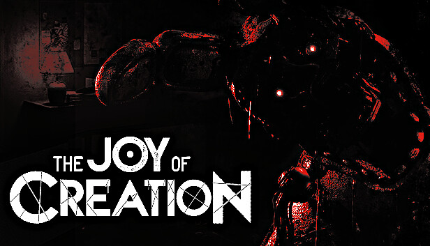

*The Joy of Creation* (TJoC) é um dos fan games mais assustadores de *Five Nights at Freddy's*. Criado por Nikson, o jogo coloca o jogador em diferentes cenários de sobrevivência enquanto enfrenta versões corrompidas e aterrorizantes dos animatrônicos.
O jogo apresenta várias fases, cada uma com um estilo de jogabilidade único: desde fugir de animatrônicos em um ambiente doméstico até sobreviver em locais externos. Cada fase exige diferentes estratégias para vencer.